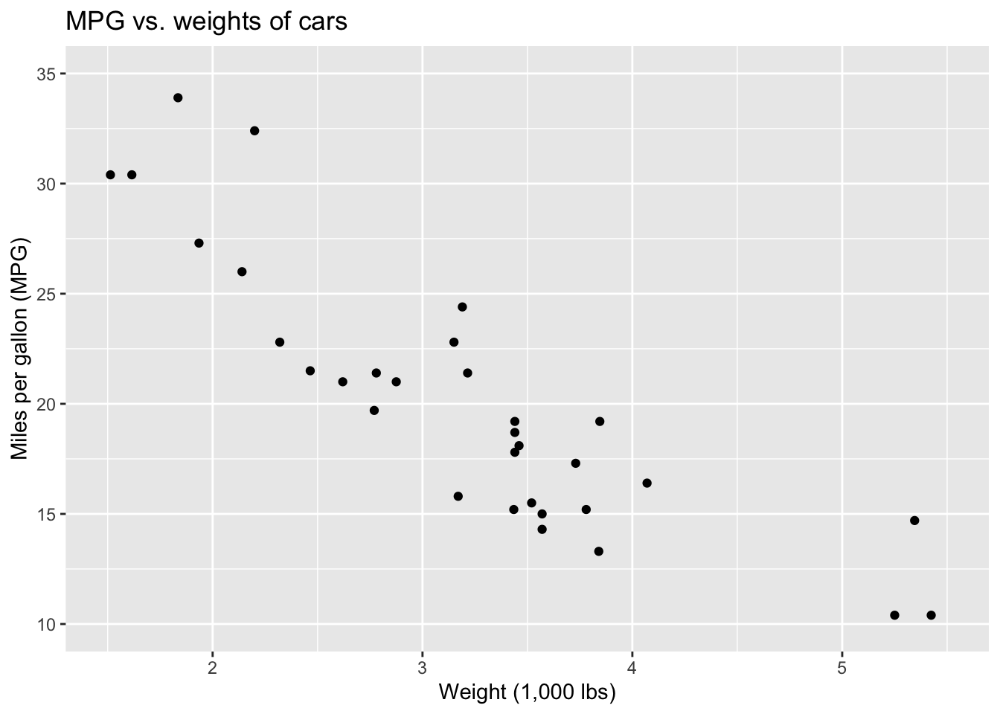
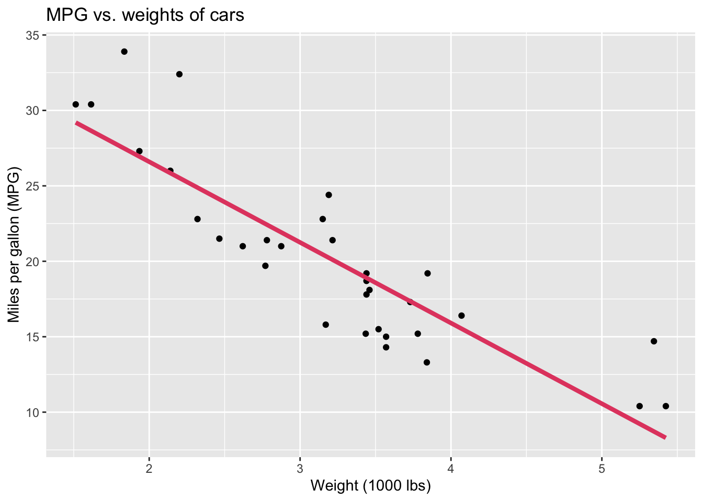
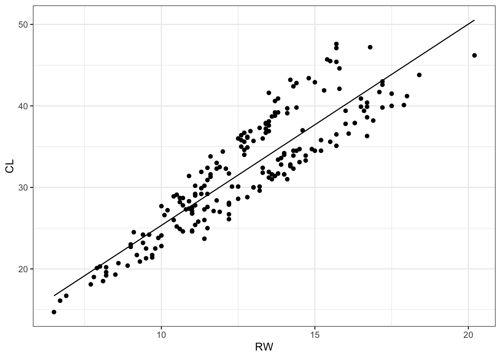

Multiple Regression
Recap: Simple Regression
We have seen last semester, in DS151, how to study the relationship between two variables using linear regression.
We can create a linear regression model that includes a predictor, such that \[\hat{\mbox{y}}=\beta_0+\beta_1\mbox{x}\]
Example: Modeling cars
Describe: What is the relationship between cars’ weights and their mileage?
Predict: What is your best guess for a car’s MPG that weighs 3,500 pounds?
Modelling vocabulary
- Predictor (explanatory variable)
- Outcome (response variable)
- Regression line
- Slope
- Intercept
Predictor (explanatory variable)
| mpg | wt |
|---|---|
| 21 | 2.62 |
| 21 | 2.875 |
| 22.8 | 2.32 |
| 21.4 | 3.215 |
| 18.7 | 3.44 |
| 18.1 | 3.46 |
| ... | ... |
Outcome (response variable)
| mpg | wt |
|---|---|
| 21 | 2.62 |
| 21 | 2.875 |
| 22.8 | 2.32 |
| 21.4 | 3.215 |
| 18.7 | 3.44 |
| 18.1 | 3.46 |
| ... | ... |
Regression line

Regression line: slope
Regression line: intercept
R Code: Modeling cars
mtcars_mod <- lm(mpg ~ wt, data = mtcars)
mtcars_mod
Call:
lm(formula = mpg ~ wt, data = mtcars)
Coefficients:
(Intercept) wt
37.285 -5.344 ggplot(mtcars, aes(x = wt, y = mpg)) +
geom_point() +
geom_smooth(method = "lm") +
labs(
x = "Weight (1,000 lbs)",
y = "Miles per gallon (MPG)",
title = "MPG vs. weights of cars"
) Multiple Regression
Multiple linear regression is used to model the relationship between a continuous outcome variable and two or more predictor variables. It extends simple linear regression by incorporating multiple predictors to explain variations in the outcome variable. The model estimates coefficients for each predictor, allowing researchers to assess their individual contributions while controlling for others, making it useful for predicting outcomes and identifying key influencing factors.
Example: The Crab Dataset
Let’s have a look at an example where we have many predictor variables. The crabs dataset from package MASS has 200 observations on 2 qualitative variables (species colour and sex), and 5 morphological measurements (frontal lobe size, rear width, carapace length and width, and body depth) of crabs of the species Leptograspus variegatus.
Exploratory Analysis
crab_dat <- MASS::crabs
glimpse(crab_dat)Rows: 200
Columns: 8
$ sp <fct> B, B, B, B, B, B, B, B, B, B, B, B, B, B, B, B, B, B, B, B, B, B…
$ sex <fct> M, M, M, M, M, M, M, M, M, M, M, M, M, M, M, M, M, M, M, M, M, M…
$ index <int> 1, 2, 3, 4, 5, 6, 7, 8, 9, 10, 11, 12, 13, 14, 15, 16, 17, 18, 1…
$ FL <dbl> 8.1, 8.8, 9.2, 9.6, 9.8, 10.8, 11.1, 11.6, 11.8, 11.8, 12.2, 12.…
$ RW <dbl> 6.7, 7.7, 7.8, 7.9, 8.0, 9.0, 9.9, 9.1, 9.6, 10.5, 10.8, 11.0, 1…
$ CL <dbl> 16.1, 18.1, 19.0, 20.1, 20.3, 23.0, 23.8, 24.5, 24.2, 25.2, 27.3…
$ CW <dbl> 19.0, 20.8, 22.4, 23.1, 23.0, 26.5, 27.1, 28.4, 27.8, 29.3, 31.6…
$ BD <dbl> 7.0, 7.4, 7.7, 8.2, 8.2, 9.8, 9.8, 10.4, 9.7, 10.3, 10.9, 11.4, …library(GGally)
library(ggplot2)
ggpairs(crab_dat, columns = 4:8, aes(colour=sex)) +
theme_bw()Describe: What are the relationships between the variables?
Exploratory Modelling
Imagine we are interested in predicting the carapace length (CL) of this species of crab. We can create a linear regression model that includes multiple predictors, such as \[\hat{\mbox{CL}}=\beta_0+\beta_1\mbox{FL}+\beta_2\mbox{RW}+\beta_3\mbox{CW}+\beta_4\mbox{BD}\]
This model can be fit in R by executing:
crab_mod1 <- lm(CL ~ FL + RW + CW + BD, data = crab_dat)
crab_mod1
Call:
lm(formula = CL ~ FL + RW + CW + BD, data = crab_dat)
Coefficients:
(Intercept) FL RW CW BD
0.3163 0.2649 -0.1779 0.6402 0.4714 We have that \[\hat{\mbox{CL}}=0.32+0.26\mbox{FL}-0.18\mbox{RW}+0.64\mbox{CW}+0.47\mbox{BD}\].
Interpretation:
As FL increases by one unit, holding the other predictors constant, then carapace length will increase by 0.26.
As RW increases by one unit, holding the other predictors constant, then carapace length will decrease by 0.18.
As CW increases by one unit, holding the other predictors constant, then carapace length will increase by 0.64.
As BD increases by one unit, holding the other predictors constant, then carapace length will increase by 0.47.
Question: How well does the model do at predicting carapace length?
crab_dat <- crab_dat %>%
mutate(CL_pred = predict(crab_mod1))
ggplot(data = crab_dat,
mapping = aes(x = CL, y = CL_pred)) +
theme_bw() +
geom_point() +
geom_abline(intercept = 0, slope = 1) +
xlab("Observed CL") +
ylab("Predicted CL")Question: How well would we have done if we only used one predictor variable, say RW?
crab_mod2 <- lm(CL ~ RW, data = crab_dat)
crab_mod2
Call:
lm(formula = CL ~ RW, data = crab_dat)
Coefficients:
(Intercept) RW
0.645 2.470 crab_dat <- crab_dat %>%
mutate(CL_pred2 = predict(crab_mod2))
ggplot(data = crab_dat,
aes(x = RW, y = CL)) +
theme_bw() +
geom_point() +
geom_line(aes(x = RW, y = CL_pred2)) 
Question: How well does the model do at predicting carapace length?
ggplot(data = crab_dat,
aes(x = CL, y = CL_pred2)) +
theme_bw() +
geom_point() +
geom_abline(intercept = 0, slope = 1) +
xlab("Observed CL") +
ylab("Predicted CL")Question: What about including the categorical variables, namely sex or sp (species colour)?
We can include categorical variables in our model, such that
\[\hat{\mbox{CL}}=\beta_0+\beta_1\mbox{RW}+\beta_2I(\mbox{sex}=\mbox{M})\] (NB: \(I(\mbox{sex}=\mbox{M})\) is an indicator function, which is equal to 1 if sex is equal to M and zero otherwise. The same type of interpretation can be drawn from \(I(\mbox{sp}=\mbox{O})\))
crab_mod3 <- lm(CL ~ RW + sex, data = crab_dat)
crab_mod3
Call:
lm(formula = CL ~ RW + sex, data = crab_dat)
Coefficients:
(Intercept) RW sexM
-6.293 2.792 5.670 crab_dat <- crab_dat %>%
mutate(CL_pred3 = predict(crab_mod3))Question: How do we interpret the coefficients related to sex?
For a male crab the expected carapace length increases by 5.67 compared to a female crab.
ggplot(data = crab_dat,
aes(x = RW, y = CL, colour = sex)) +
theme_bw() +
geom_point() +
geom_line(aes(x = RW, y = CL_pred3, colour = sex)) Question: How well does the model do at predicting carapace length?
ggplot(data = crab_dat,
aes(x = CL, y = CL_pred3, colour = sex)) +
theme_bw() +
geom_point() +
geom_abline(intercept = 0, slope = 1) +
xlab("Observed CL") +
ylab("Predicted CL")
Model Comparison
One way of comparing how well our modelling strategies did in terms of predictions is to sum the squared discrepancies (residuals) between predicted and observed values, and see which one is smaller.
discrepancy_mod1 <- sum(residuals(crab_mod1)^2)
discrepancy_mod2 <- sum(residuals(crab_mod2)^2)
discrepancy_mod3 <- sum(residuals(crab_mod3)^2)discrepancy_mod1[1] 27.35058discrepancy_mod2[1] 2047.417discrepancy_mod3[1] 576.4921Typically we would split the data into training and test set, use only the training set to fit the model, and then perform this computation on both sets. We will see more details on how to compare the models in terms of their predictive power in the module Statistical Machine Learning. We will also see more details on this in the modules Linear Models I and II, how to properly test hypotheses, how to assess goodness-of-fit, what the important assumptions are and how to properly check them.
Recap: Logistic Regression
Logistic regression is a generalized regression model where the outcome is a two-level categorical variable. The outcome, takes the value 1 or 0 with probability. Ultimately, it is the probability of the outcome taking the value 1 (i.e., being a “success”) that we model in relation to the predictor variables. For this to work, we transform the expected outcome in such a way that it will be bounded between 0 and 1, and hence our estimates will be sensical. The transformation we use is called the logit, and is the natural logarithm of the odds of success.
Modelling binary outcomes
\(y\) takes on values 0 (failure) or 1 (success)
\(p\): probability of success
\(1-p\): probability of failure
We can’t model \(y\) directly, so instead we model \(p\)
Linear model
\[ \hat{p}_i = \beta_o + \beta_1 \times x \]
But remember that \(p\) must be between 0 and 1
We need a link function that transforms the linear model to have an appropriate range
Logit link function
The logit function takes values between 0 and 1 (probabilities) and maps them to values in the range negative infinity to positive infinity:
\[ logit(p) = log \bigg( \frac{p}{1 - p} \bigg) \]
Generalized linear model
- We model the logit (log-odds) of \(p\) :
\[ logit(\hat{p}) = log \bigg( \frac{\hat{p}}{1 - \hat{p}} \bigg) = \beta_o + \beta_1 \times x \]
- Then take the inverse to obtain the predicted \(p\):
\[ \hat{p} = \frac{e^{\beta_o + \beta_1 \times x }}{1 + e^{\beta_o + \beta_1 \times x }} \]
A logistic model visualized
Example: The Iris Dataset
You will have explored the Iris dataset initially last semester in DS151.
Iris is a genus of about 300 species of flowering plants, taking its name from the Greek word for a rainbow (which is also the name for the Greek goddess of rainbows, Iris). The flowers are very showy, and we would like to know if it is possible to identify some of the species based on measurements of different parts of the flowers.
The dataset gives the measurements in centimeters of the variables:
- sepal length
- sepal width
- petal length
- petal width
for 50 flowers from each of three species of Iris: Iris setosa, Iris versicolor, and Iris virginica.
This dataset is available in base R as iris. Let’s have a look:
library(tidyverse)
glimpse(iris)Rows: 150
Columns: 5
$ Sepal.Length <dbl> 5.1, 4.9, 4.7, 4.6, 5.0, 5.4, 4.6, 5.0, 4.4, 4.9, 5.4, 4.…
$ Sepal.Width <dbl> 3.5, 3.0, 3.2, 3.1, 3.6, 3.9, 3.4, 3.4, 2.9, 3.1, 3.7, 3.…
$ Petal.Length <dbl> 1.4, 1.4, 1.3, 1.5, 1.4, 1.7, 1.4, 1.5, 1.4, 1.5, 1.5, 1.…
$ Petal.Width <dbl> 0.2, 0.2, 0.2, 0.2, 0.2, 0.4, 0.3, 0.2, 0.2, 0.1, 0.2, 0.…
$ Species <fct> setosa, setosa, setosa, setosa, setosa, setosa, setosa, s…Exploratory Analysis
Let’s work, initially, only with species versicolor and virginica. We create a plot that shows in the \(x\) axis the petal length, and in the \(y\) axis only the values of 0 and 1, representing whether the observation belongs to class virginica or not (0 = the observation belongs to class versicolor; 1 = it belongs to class virginica). We call this a binary (or dummy) variable.
iris2 <- iris %>%
filter(Species != "setosa") %>%
mutate(Species.binary = as.numeric(Species == "virginica"))
ggplot(iris2, aes(x = Petal.Length, y = Species.binary)) +
geom_point() +
theme_bw()Exploratory Modelling
A simple logistic regression model can be fit, such that \[\displaystyle\log\left(\frac{p}{1-p}\right)=\beta_0+\beta_1*\mbox{Petal.Length}\]
Do this in R by executing:
iris_mod1 <- glm(Species.binary ~ Petal.Length,
family = binomial,
data = iris2)
iris_mod1 %>% coef() %>% round(digits = 4) (Intercept) Petal.Length
-43.7809 9.0020 ggplot(iris2, aes(x = Petal.Length, y = Species.binary)) +
geom_point() +
geom_smooth(method = glm, method.args = list(family = "binomial"), se = FALSE) +
ylab("p") +
theme_bw()We may interpret the y-axis numbers here as the probability \(p\) of belonging to class virginica. It appears that as the petal length increases, so does the likelihood of belonging to the virginica class.
Multiple Logistic Regression
Multiple logistic regression is used to model the relationship between a binary outcome variable and two or more predictor variables. It extends simple logistic regression by including multiple independent variables, which can be continuous or categorical, to assess their combined effect on the probability of an event occurring. The model estimates odds ratios for each predictor while controlling for the effects of others, making it useful for understanding complex associations.
Example: Irish continued - including more predictors
It is frequently of interest to use multiple covariates to improve our predictive power. Let’s fit a logistic regression model including all four covariates as predictors in our model: \[\displaystyle\log\left(\frac{p}{1-p}\right)=\beta_0+\beta_1*\mbox{Sepal.Length}+\beta_2*\mbox{Sepal.Width}+\beta_3*\mbox{Petal.Length}+\beta_4*\mbox{Petal.Width}\]
iris_mod2 <- glm(Species.binary ~ Sepal.Length + Sepal.Width + Petal.Length + Petal.Width,
family = binomial,
data = iris2)
iris_mod2 %>% coef %>% round(digits = 4) (Intercept) Sepal.Length Sepal.Width Petal.Length Petal.Width
-42.6378 -2.4652 -6.6809 9.4294 18.2861 Classification
Question: How well did we do at classifying the Iris species?
iris_predict <- iris2 %>%
mutate(p_hat = predict(iris_mod2, type = "response") %>% round(2),
Species_pred = ifelse(p_hat >= 0.5,"virginica","versicolor"))
n_correct_full <- sum(iris_predict$Species_pred == iris_predict$Species)
n_correct_full[1] 98Our model correctly predicts the species class of 98 out of 100 observations.
Example: The Wine Dataset
The wine dataset contains the results of a chemical analysis of wines grown in a specific area of Italy. Three types of wine are represented in the 178 samples, with the results of 13 chemical analyses recorded for each sample. The Type variable has been transformed into a categoric variable.
The data contains no missing values and consits of only numeric data, with a three class target variable (Type) for classification.
Let’s have a glimpse at the dataset:
wine <- read_csv("https://www.dropbox.com/s/l5x4ur06gfhpg0h/wine.csv?raw=1") Rows: 178 Columns: 14
── Column specification ────────────────────────────────────────────────────────
Delimiter: ","
chr (1): Type
dbl (13): Alcohol, Malic, Ash, Alcalinity, Magnesium, Phenols, Flavanoids, N...
ℹ Use `spec()` to retrieve the full column specification for this data.
ℹ Specify the column types or set `show_col_types = FALSE` to quiet this message.glimpse(wine)Rows: 178
Columns: 14
$ Type <chr> "type1", "type1", "type1", "type1", "type1", "typ…
$ Alcohol <dbl> 14.23, 13.20, 13.16, 14.37, 13.24, 14.20, 14.39, …
$ Malic <dbl> 1.71, 1.78, 2.36, 1.95, 2.59, 1.76, 1.87, 2.15, 1…
$ Ash <dbl> 2.43, 2.14, 2.67, 2.50, 2.87, 2.45, 2.45, 2.61, 2…
$ Alcalinity <dbl> 15.6, 11.2, 18.6, 16.8, 21.0, 15.2, 14.6, 17.6, 1…
$ Magnesium <dbl> 127, 100, 101, 113, 118, 112, 96, 121, 97, 98, 10…
$ Phenols <dbl> 2.80, 2.65, 2.80, 3.85, 2.80, 3.27, 2.50, 2.60, 2…
$ Flavanoids <dbl> 3.06, 2.76, 3.24, 3.49, 2.69, 3.39, 2.52, 2.51, 2…
$ Nonflavanoid.phenols <dbl> 0.28, 0.26, 0.30, 0.24, 0.39, 0.34, 0.30, 0.31, 0…
$ Proanth <dbl> 2.29, 1.28, 2.81, 2.18, 1.82, 1.97, 1.98, 1.25, 1…
$ Color <dbl> 5.64, 4.38, 5.68, 7.80, 4.32, 6.75, 5.25, 5.05, 5…
$ Hue <dbl> 1.04, 1.05, 1.03, 0.86, 1.04, 1.05, 1.02, 1.06, 1…
$ OD <dbl> 3.92, 3.40, 3.17, 3.45, 2.93, 2.85, 3.58, 3.58, 2…
$ Proline <dbl> 1065, 1050, 1185, 1480, 735, 1450, 1290, 1295, 10…Change the code below and make different plots with other covariate combinations. What sort of patterns begin to emerge?
ggplot(wine, aes(x = Ash, y = Malic, colour = Type)) +
geom_point() +
theme_bw() +
labs(colour = "Wine Type")We will work only with types 1 and 2
wine2 <- wine %>%
filter(Type != "type3") %>%
mutate(Type_binary = as.numeric(Type == "type1")) %>%
as_tibble
wine2# A tibble: 130 × 15
Type Alcohol Malic Ash Alcalinity Magnesium Phenols Flavanoids
<chr> <dbl> <dbl> <dbl> <dbl> <dbl> <dbl> <dbl>
1 type1 14.2 1.71 2.43 15.6 127 2.8 3.06
2 type1 13.2 1.78 2.14 11.2 100 2.65 2.76
3 type1 13.2 2.36 2.67 18.6 101 2.8 3.24
4 type1 14.4 1.95 2.5 16.8 113 3.85 3.49
5 type1 13.2 2.59 2.87 21 118 2.8 2.69
6 type1 14.2 1.76 2.45 15.2 112 3.27 3.39
7 type1 14.4 1.87 2.45 14.6 96 2.5 2.52
8 type1 14.1 2.15 2.61 17.6 121 2.6 2.51
9 type1 14.8 1.64 2.17 14 97 2.8 2.98
10 type1 13.9 1.35 2.27 16 98 2.98 3.15
# ℹ 120 more rows
# ℹ 7 more variables: Nonflavanoid.phenols <dbl>, Proanth <dbl>, Color <dbl>,
# Hue <dbl>, OD <dbl>, Proline <dbl>, Type_binary <dbl>Change the code below and fit a logistic regression model using the four predictors you believe are the best to classify the two types of wine. Also play around with different thresholds for the classification rule. Compare with your peers. What predictors yielded the best predictive performance?
# include the predictors below
logistic_reg <- glm(Type_binary ~ Malic + Ash + Alcalinity + Magnesium,
family = binomial, data = wine2)
# set the threshold for the classification rule below
threshold <- 0.50
# computes the percentage of correct predictions
wine_predict <- wine2 %>%
mutate(p_hat = predict(logistic_reg, type = "response") %>% round(2),
Type_pred = ifelse(p_hat >= threshold, "type1","type2"))
n_correct <- sum(wine_predict$Type_pred == wine_predict$Type)
n_total <- nrow(wine2)
percentage_correct <- n_correct/n_total * 100
percentage_correct[1] 86.92308